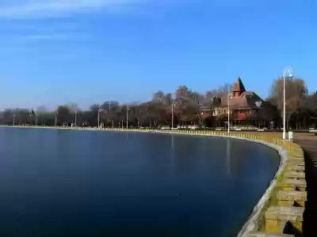

SRBIJA
Palićko jezero se nalazi 8 km od Subotice, pored mesta Palić, i značajan je turistički centar Vojvodine. Jezero zahvata površinu od 4,6 km². Prosečna
dubina jezera je 1,9 m, najveća je 3,5 m, a turistički sektor zahvata 3,8 km² sa tri posebne plaže. Jezero je inače, podeljeno na četiri sektora i
bogato je ribom. U toku turističke sezone, temperatura vode se kreće između 18 i 25°C i prosečno ima oko 2100 sunčanih sati godišnje.
Još se krajem 18. veka znalo da jezerska voda i mulj imaju lekovita svojstva. Prema ideji lekara iz Subotice, 1845. je najpre izgrađena gostionica
„Donja trščara“, što je bio temelj kasnije izgradnje Kupališta i Banje. Svoj procvat Palić doživljava nakon otvaranja pruge Budimpešta – Zemun 1883.
i tramvajske linije do Subotice 1897.

Jezero je atraktivno pre svega kupačima, ali sam centar nudi i druge vidove zabave, sportske aktivnosti i obilazak rezervata prirode, posmatranje
ptica, pešačke ture i foto-safari. Obala je veoma privlačna zbog svojih peščanih sprudova, staza za bicikliste, kao i poligona za učenje vožnje.
Jezero je bogato ribom i ovo daje priliku zaljubljenicima u pecanje za aktivan odmor. Centar pruža i mogućnosti za lečenje i oporavak. Jezersko
blato je bogato važnim mineralima sa lekovitim osobinama. Obala jezera je duga oko 17 km i celom svojom dužinom je uređena.
Zbog svoje geološko-ekološke vrednosti Palićko jezero je zaštićeno područje i ima rang parka prirode. Floru jezera karakterišu akvatične vrste,
a pronađena je retka vrsta orhideja močvarni kacun. U palićkom jezeru živi 19 vrsta riba, među kojima su: štuka, čikov, smuđ, šaran, sivi i beli
tolstolobik.
Na području Palićkog jezera zabeleženo je 207 vrsta ptica, od kojih se 101 vrsta gnezdi. Pet vrsta se nalazi na listi ugroženih prica u svetu, 48
vrsta je ugroženo u Evropi, 4 imaju mali areal u svetu, 86 je ugroženo i retko u Srbiji, dok 63 vrsta ima ekološki ili neki drugi značaj.